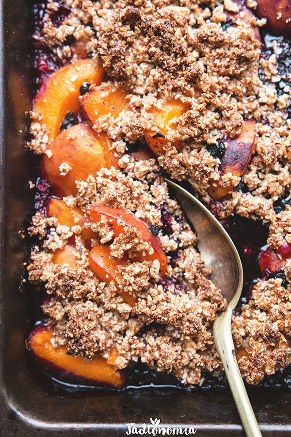

Czas przygotowania: do 45 minut
Składniki na 4 - 6 porcji:
350 g jagód
250 g porzeczek
700 g moreli
1 1/4 szklanka płatków owsianych
1/4 szklanki migdałów
1/4 szklanki cukru trzcinowego lub kokosowego
1/3 łyżeczki kardamonu
1/4 łyżeczki soli
1/3 szklanki oleju kokosowego
do podania: kokosowe mleczko albo ulubiony sorbet
Przygotowanie:
Piekarnik rozgrzać do 180 stopni. Duże naczynie żaroodporne delikatnie posmarować olejem kokosowym. Morelom wykroić pestki, przekroić na ćwiartki, dodać do naczynia i wsypać porzeczki oraz jagody. W małym kubeczku blendera umieścić wszystkie pozostałe składniki poza olejem kokosowym. Zmiksować na grubą mąkę, 1 czubatą łyżką mieszanki posypać owoce w foremce, a do reszty dodać olej kokosowy i ponownie zmiksować na kruszonkę. Tak przygotowaną kruszonkę wysypać na owoce, wsunąć do gorącego piekarnika i piec przez 25 – 35 minut do momentu, aż kruszonka będzie złocista. Wyjąć i podawać na gorąco bez dodatków albo z kleksem kokosowego mleka.
Propozycja podania:
